New York - 2003
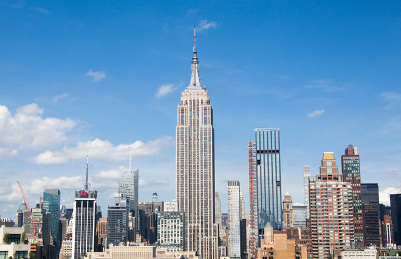
A brief trip to stay with friends on the Upper East Side in New York before they gutted the apartment they had purchased next door to their existing property. Our first morning found us atop one of the world's most iconic buildings, the Empire State Building.
Walking back for lunch we found ourselves outside one of the world's most notorious nightclubs, Studio 54. Seán's drag act was not very plausible ...
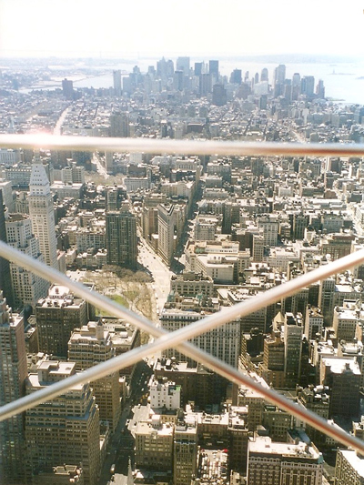
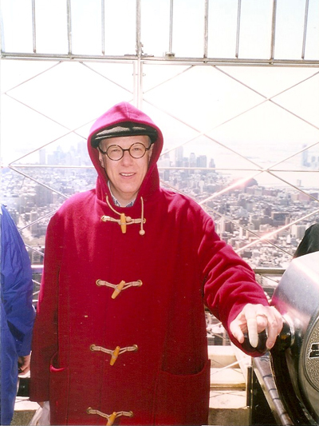
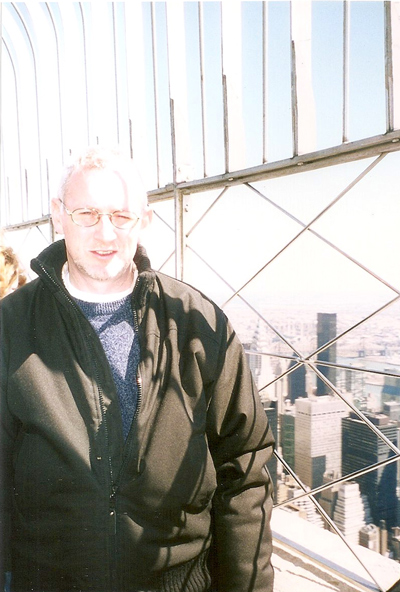
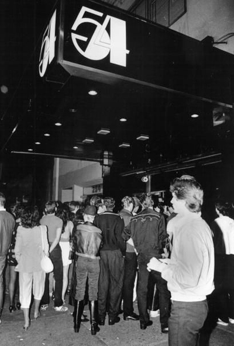
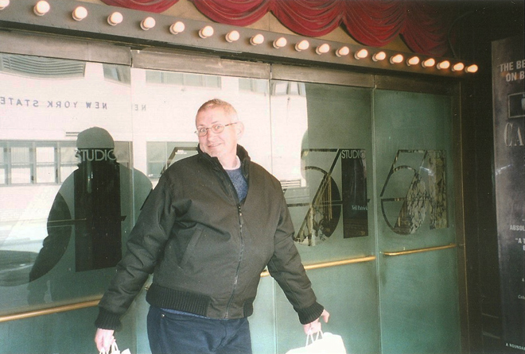
Then to Battery Park with a view of the Statue of Liberty in the distance (we didn't visit it this time, unlike on my trip in 1996) and a walk across the Brooklyn Bridge.
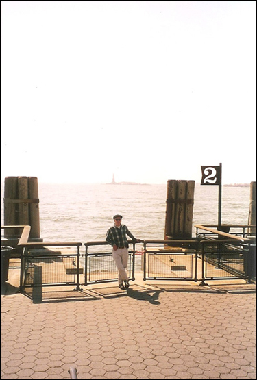
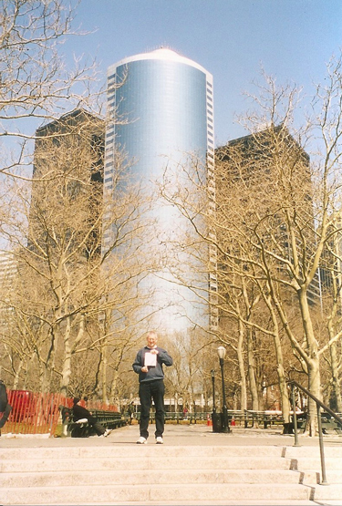
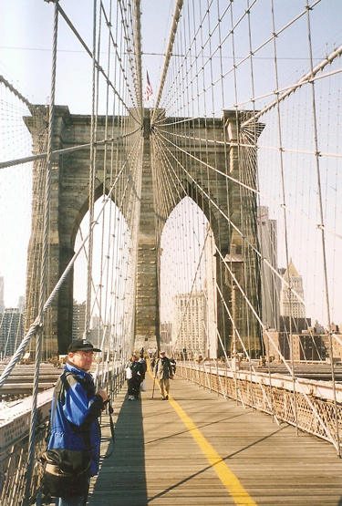
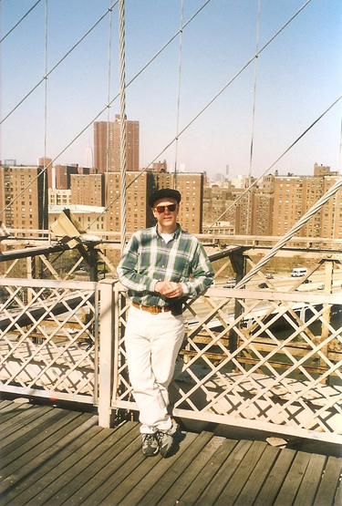
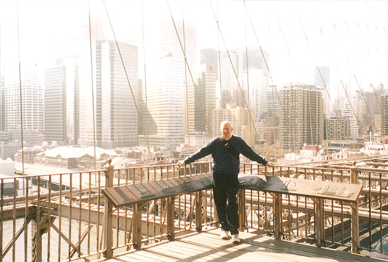
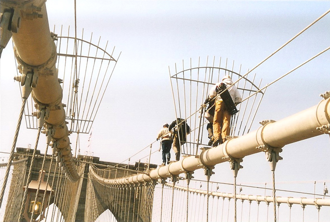
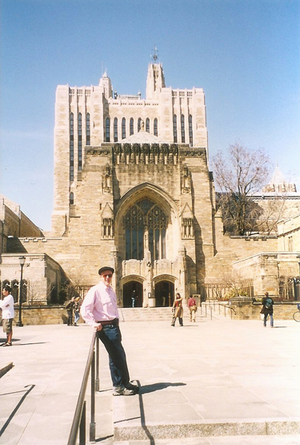
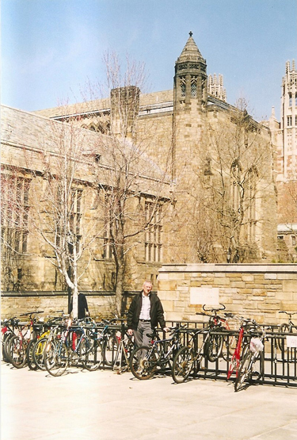
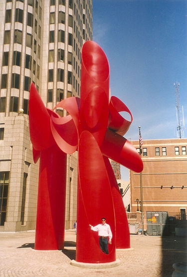
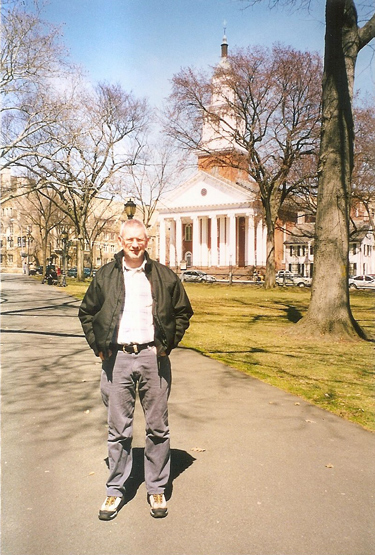
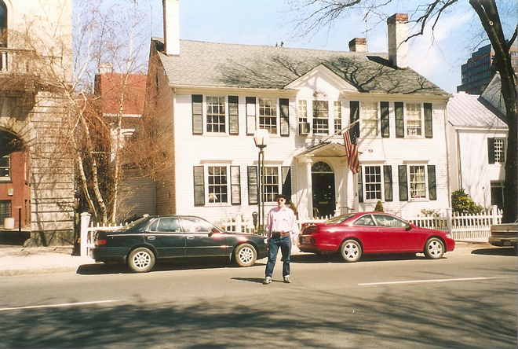